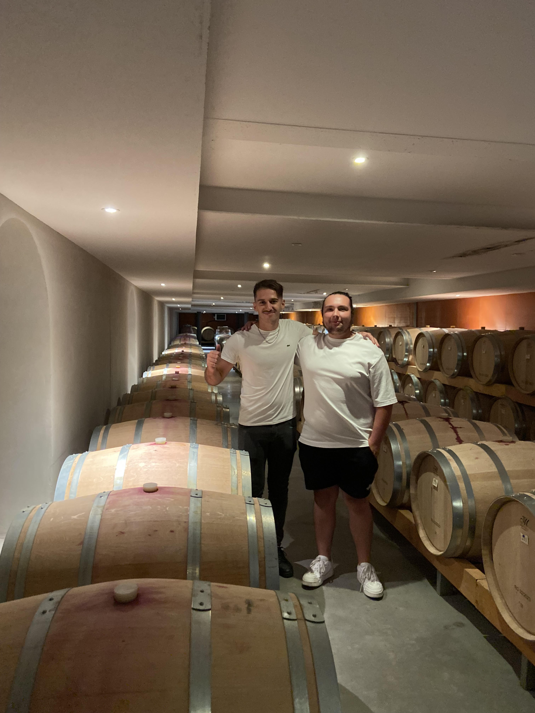

PARTIE II, L'IA et les dynamiques d'apprentissage La première partie a montré que l’IA déplace le point d’application de l’effort nécessaire à la performance. Cette deuxième partie examine ce déplacement dans l’acte d’apprendre. Elle part de l’accompagnement individualisé rendu possible par un interlocuteur disponible, analyse la redistribution de la charge cognitive et confronte ces mécanismes à un retour d’expérience. Elle élargit ensuite l’analyse aux enseignants et aux organisations, avant d’interroger la constitution d’une compétence spécialisée selon les métiers. L’enjeu n’est donc pas de déterminer si l’IA remplace l’apprentissage, mais de comprendre dans quelles conditions elle peut soutenir l’autonomie sans supprimer l’effort qui construit la compréhension. Cette question ouvrira directement l’examen des risques et des limites de la délégation.
2.1 Apprendre avec l'IA : la transformation de l'acte d'apprendre
d'apprendre
a) La disponibilité permanente d'un interlocuteur cognitif
La rareté historique de l'explication personnalisée Un fait si constant qu'on ne l'énonce jamais : obtenir une explication ajustée à sa propre incompréhension a toujours supposé la disponibilité d'un enseignant. La conséquence est structurante. Faute de pouvoir ajuster l'explication à l'apprenant, on ajuste l'apprenant à l'explication : l'enseignement est calibré sur un niveau moyen. C'est à cette contrainte que répondent les modes d'apprentissage intégrés aux grands modèles de langage, dont le cas analysé ici : « Apprentissage guidé » de Gemini. Trois ruptures La disponibilité. L'explication cesse d'être conditionnée par la présence d'un tiers : elle est disponible sans condition. La répétition sans coût social. C'est la rupture la plus sous -estimée. Redemander plusieurs fois la même explication a un coût : devant un groupe, l'aveu répété de l'incompréhension engage l'image de soi. Ce coût ne conduit pas à mal comprendre,
il conduit à renoncer à la question. Face à une machine, il disparaît. Les apprenants consultés lors de la conception de l'Apprentissage guidé de Gemini disent apprécier « un espace sûr », « sans jugement », où avancer « à son propre rythme »¹. L'adaptation au point de blocage. L'explication peut être reprise sous un autre angle, avec un autre exemple, à un autre niveau de détail, jusqu'à ce qu'elle passe. Une nuance décisive : répondre n'est pas enseigner Certains concepteurs ont pris la distinction au sérieux. Partant du principe qu'on apprend mieux en interagissant activement, Google a constaté qu'« améliorer les prompts ne suffisait pas ». D'où LearnLM, une famille de modèles entraînés Google, dont les capacités ont ensuite été intégrées à Gemini. Le mode « Apprentissage guidé » inverse le comportement par défaut : il questionne, décompose le problème, fournit des indices plutôt que la solution. Dans une expérimentation menée en Sierra Leone auprès d'enseignants et d'élèves, le système pose une question d'étayage dans 76,4 % de ses messages, contre 2,1 % de solutions directes². Ce qui reste ouvert Disposer d'un interlocuteur permanent ne garantit rien. Le dispositif change les conditions ; il ne décide pas de ce que l'apprenant en fait. La même expérimentation livre d'ailleurs un signal à retenir : le bénéfice croît avec le niveau initial des élèves . Ceux qui savaient déjà le plus en ont tiré le plus².
¹ Maureen HEYMANS, « L'Apprentissage Guidé dans Gemini : de la réponse à la compréhension », Blog Google France , 3 septembre 2025. URL : https://blog.google/intl/fr-fr/nouveautes-produits/lapprentissage-guide-dans-gemini-de-la-reponse-a-la-comprehension/
² LearnLM Team, Google & Fab AI, Teaching with Gemini: Measuring the impact of Guided Learning on student mathematics progress in Sierra Leone, rapport technique, 15 mai 2026. URL : https://storage.googleapis.com/deepmind-media/LearnLM/learnLM_sierraleone_may26.pdf
b) Le déplacement de la charge cognitive
b.1) La théorie de la charge cognitive (Sweller)
Une ressource limitée La mémoire de travail celle qui manipule l'information pendant qu'on réfléchit ne traite qu'un nombre restreint d'éléments à la fois : trois à quatre selon les travaux récents, sept plus ou moins deux selon l'ordre de grandeur historique de Miller¹. Au-delà de ce plafond, l'information excédentaire n'est pas mal traitée, elle n'est pas traitée du tout. Apprendre revient donc à répartir un budget fixe : un plan de travail dont la surface ne varie pas, seul varie ce qu'on y pose. Les trois postes de dépense Sweller distingue trois façons de consommer ce budget². La charge intrinsèque tient à la difficulté propre du sujet : le nombre d'éléments à tenir ensemble. Retenir un mot de vocabulaire en mobilise un ; construire une phrase correcte en mobilise plusieurs à la fois. Point décisif pour la suite : cette difficulté est relative au niveau de l'apprenant . Ce qui est un assemblage coûteux pour le débutant est devenu un bloc unique pour l'expert. La charge extrinsèque ne tient pas au contenu mais à sa forme : support mal organisé, jargon superflu, consigne ambiguë. Elle consomme du budget sans rien construire c'est la seule qu'on cherche toujours à réduire. La charge germane ou essentielle est l'effort investi dans la compréhension : relier, comparer, reformuler, organiser. D'où une règle d'action simple : réduire l'extrinsèque, calibrer l'intrinsèque, consacrer le reste à la germane. Dans un dispositif classique, ces trois réglages relèvent d e l'enseignant.
¹ George A. MILLER, « The Magical Number Seven, Plus or Minus Two », Psychological Review , vol. 63, n° 2, 1956, p. 81 -97. https://labs.la.utexas.edu/gilden/files/2016/04/MagicNumberSeven-Miller1956.pdf
² Wikipédia, Cognitive load https://en.wikipedia.org/wiki/Cognitive_load
b.2) Comparatif : apprentissage classique / apprentissage avec IA générative
En b.1, les trois charges relevaient d'un même réglage : celui de l'enseignant. Avec l'IA, ce réglage change de main.
La charge intrinsèque : d'une difficulté fixe à une difficulté ajustable En classique, le niveau est calibré pour le groupe : une vitesse unique, trop rapide pour certains, trop lente pour d'autres. C'est la contrainte de moyenne. Avec l'IA, l'apprenant fait reformuler, découper, reprendre un préalable manquant. La difficulté du contenu ne change pas ; ce qui s'ajuste, c'est le rythme. Une revue systématique de trente -neuf études le confirme : baisse significative de la charge intrinsèque en lecture assistée par chatbot³. Réserve : l'ajustement suppose une estimation correcte du niveau. La charge extrinsèque : d'une friction subie à une friction produite En classique , cette friction dépend du professeur et du support et de la stratégie d’enseignement. Avec l'IA, elle varie dans les deux sens. À la baisse : plus de manuel à fouiller, plus de jargon à décoder, la question peut être reposée sans coût social. À la hausse : formuler la demande, recommencer quand la réponse tombe à côté, trier, et surtout vérifier. Le bilan ne dépend donc pas de l'outil mais de l'usage : sur les trente -neuf études recensées3 et ⁴, vingt et une n'aboutissent qu'à un verdict conditionnel, le bénéfice dépendant du guidage, du dosage et surtout des connaissances préalables. La charge germane : d'un effort organisé à un effort à obtenir L'effondrement : si l'IA produit le résultat, sans poser de questions, il suffit de valider la réponse. La germane est court-circuitée.
La hausse : si l'IA questionne au lieu de répondre et demande de justifier, l'effort augmente. Le mode « Apprentissage guidé » de Gemini (a) l'illustre, et plusieurs expériences contrôlées le documentent, extrinsèque en baisse, germane en hausse, performance améliorée. En conclusion, l’utilisation efficace de l’IA consiste à réduire la charge extrinsèque inutile, à ajuster la charge intrinsèque au niveau de l’apprenant et à organiser activement une charge germane suffisante. L’IA ne doit pas supprimer l’effort d’apprentissage, mais le d éplacer vers la compréhension, le raisonnement, la vérification, la justification et le transfert⁵. L’IA peut limiter la charge extrinsèque, mais elle peut aussi l’augmenter en imposant de formuler les demandes, de trier les réponses et de les vérifier. La réduction de la charge extrinsèque n’est donc pas automatique , elle dépend du guidage.
³ Weixu QIAN, Feng YANG, Yaming CAO, Liangliang YI, Run GU et Zhuo WANG, « Generative AI and cognitive load in education: a systematic review of WoS/SSCI - indexed studies through the lens of cognitive load theory », Frontiers in Psychology , vol. 17, 27 août 2026. https://doi.org/10.3389/fpsyg.2026.1921504
⁴ Evan F. RISKO et Sam J. GILBERT, « Cognitive Offloading », Trends in Cognitive Sciences, vol. 20, n° 9, 2016, p. 676 -688. (Sité dans la source : « Generative AI and cognitive load in education: a systematic review of WoS/SSCI-indexed studies through the lens of cognitive load theory »)
⁵ Hamsa BASTANI, Osbert BASTANI, Alp SUNGU, Haosen GE, Özge KABAKCI et Rei IWATANI, « Generative AI Can Harm Learning », 2024. https://papers.ssrn.com/sol3/papers.cfm?abstract_id=4895486
c) Retour d'expérience : apprendre avec l'IA sur douze mois
En un an, j’ai perdu 50 kg. Au cours de la même période, j’ai participé à un trail de 20 kilomètres et 1 300 mètres de dénivelé positif , que j’ai terminé 29ᵉ sur 300 participants1. Ces chiffres ne valent pas seulement comme résultats sportifs ou
comme indicateurs de transformation physique. Ils attestent qu e j’ai progressivement appris à comprendre mon alimentation, à structurer mon entraînement. Dans cette trajectoire, l’intelligence artificielle a constitué l’un des outils de mon apprentissage.

Une progression en trois temps Au départ, ma question était générale : « Comment perdre du poids ? » . Elle correspondait à la situation d’une personne qui ne sait pas encore précisément ce qu’elle ignore. Je ne disposais pas d’un cadre d’analyse suffisamment structuré pour identifier les différents paramètres impliqués dans une perte de poids. Les premiè res réponses obtenues m’ont donc permis d’acquérir les notions fondamentales : la différence entre apports et dépenses, le fonctionnement du déficit calorique, ainsi que le rôle de l’activité physique. À ce stade, l’IA m’a surtout enseigné que la perte de poids n’est pas une question de génétique (ce que je pensais), mais comme le résultat d’un ensemble de mécanismes. Elle m’a expliqué mathématiquement le fonctionnement de régulation du poids. La deuxième étape a consisté à adapter ces principes à mon propre cas. La question est : comment appliquer ces principes à mon poids, à mon niveau d’activité, à
mes contraintes quotidiennes et à mes goûts alimentaires . Les échanges sont alors devenus plus personnalisés. Enfin, la dernière étape a été celle de l’autonomie. Aujourd’hui, les bases de mon alimentation et la structuration générale de mes entraînements ne nécessitent plus le recours systématique à l’IA. Je suis capable de construire une semaine d’entraînement cohérente, d’identifier les grands équilibres alimentaires à respecter et d’ajuster mes choix en fonction de mon objectif. Un outil d’apprentissage plutôt qu’une prothèse Dans mon cas, l’IA a davantage fonctionné comme un outil d’apprentissage que comme une prothèse destinée à produire des réponses à ma place. Les échanges m’ont permis de comprendre les principes de base liés à l’alimentation et à l’entraînement, puis de les appliquer de manière plus autonome. Cette autonomie possède toutefois des limites. Être capable de comprendre les grands principes de l’alimentation et de l’entraînement ne signifie pas disposer d’une expertise complète. Cela ne m’a pas empêché de consulter des professionnels qui m'ont permis de repérer des paramètres que je ne sais pas identifier. Cette expérience doit toutefois être nuancée. Ma méthode n’était pas optimale : je n’avais pas véritablement réfléchi à une manière structurée d’apprendre avec l’IA. Je l’utilisais de façon assez empirique, en fonction de mes questions et de mes besoins du moment. Malgré ce caractère amateur, l’outil a constitué un support d’apprentissage particulièrement efficace. Cette expérience mérite néanmoins d’être étudiée. Elle montre qu’un usage non encadré peut produire des effets significatifs. Elle soulève alors une question importante : si une méthode d’apprentissage avec l’IA était explicitement pensée, structurée et accompagnée, ne pourrait-elle pas rendre ce type d’apprentissage encore plus efficace ? C’est cette question qui conduit à examiner, dans la section suivante, la transformation des dispositifs d’enseignement et de formation.
1Classement du trail des Mattes Rouges 2025 : https://www.centre-pyrenees-trail.com/_files/ugd/fc5ee5_881f91300208404fbd106ff1747bf4f5.pdf
2.2 Nouveau rôle de l'enseignement et des organisations
a) Les solutions de l'enseignement face à l'IA
Pourquoi former les enseignants Les parties précédentes ont établi deux choses. D'abord, que l'IA fait gagner du temps sur des tâches maîtrisées (1.2). Ensuite, elle permet de produire du sur -mesure là où l'on ne savait faire que de la moyenne (1.4). Un enseignant est concerné par les deux. Sur le premier point, le métier comporte une part importante de tâches périphériques : préparer un support, rédiger un énoncé, produire plusieurs variantes d'un même exercice, corriger. Ce sont précisément les tâches que l'IA allège. Sur le second point , l'enjeu est plus profond. On sait qu'un élève accompagné individuellement progresse mieux qu'un élève noyé dans un groupe de trente. Mais cette solution était inapplicable en raison du coût. Nous avons vu qu’avec l’IA cette solution est techniquement possible en partie 2.1. De plus les élèves utilisent déjà ces outils, formés ou non. L'enjeux est donc double, il relève de l’efficacité de l’enseignement et de la transmission de bonnes pratiques d’utilisation. Des formations qui existent déjà Cette formation des formateurs est engagée. Le Cnam Pays de la Loire propose une micro -certification intitulée « Former avec les IA génératives ». L'objectif annoncé est explicite : savoir intégrer des IA génératives en formation. Le dispositif est porté par Emmanuelle Betton, maître de conférences en sciences de l'éducation et de la formation au Cnam, et François Calvez, directeur de l'innovation au Cnam Pays de la Loire¹. L'Académie de Paris, propose une ressource sur « L'intelligence artificielle dans l'éducation » dont la problématique est : comment les acteurs de l'éducation doivent - ils comprendre l'intelligence artificielle avant de pouvoir l'enseigner ? ²
Ce que l'on enseigne concrètement Dire qu'il faut former les enseignants ne suffit pas : il faut préciser à quoi. Le manuel IA pour les enseignants, produit dans le cadre du projet européen AI4T 3 et diffusé en accès ouvert, donne une réponse tangible : la formation ne porte pas sur le fonctionnement interne des modèles, mais sur des gestes professionnels identifiables. L’art du prompt, Formuler une demande. Le manuel propose une méthode en étapes. Avant de rédiger quoi que ce soit, l'enseignant définit son objectif, l'usage prévu et le format attendu. Exemple donné : produire un exercice d'anglais sur les verbes irréguliers, destiné à des étudiants de deuxiè me année, à distribuer en cours. Vient ensuite le contexte, décrit comme « l'épine dorsale des IA génératives » : plus il est précis, plus la réponse est utilisable. L'image retenue est parlante formuler un prompt, c'est demander un document précis à un bibliothécaire, non prendre des livres au hasard en espérant tomber sur le bon. Traiter la réponse comme un brouillon. Le manuel documente un cas de conception d'une séquence sur les énergies renouvelables. Le verdict de l'autrice est explicite : la réponse obtenue constitue un point de départ , ajusté ensuite selon les besoins des élèves, le programme et les ressources disponibles les parties inutiles étant supprimées, les autres développées. L'IA produit une matière première ; l'arbitrage pédagogique reste entier. Connaître les défaillances. Un chapitre est consacré aux hallucinations : erreurs factuelles, références inventées, faits présentés comme vérités sans qualification. Le manuel avance un taux d'exactitude plafonnant autour de 60 % selon les sujets, et signale le risque spécifique de l'usage sur un domaine que l'on ne maîtrise pas l'utilisateur, alors, n'a aucun moyen de repérer l'erreur. Repenser l'évaluation. Dernier déplacement, le plus structurant : puisque ces outils rédigent efficacement une dissertation, certains exercices donnés à la maison perdent leur fonction. Le manuel invite à diversifier les formats : projets de groupe, tâches pratiques, présentations orales et à dépasser les questions à réponse fermée. Ces quatre gestes ont un point commun : aucun ne s'acquiert par simple mise à disposition de l'outil. Ils supposent une formation explicite. Et le troisième comme le
quatrième confirment le principe posé en Partie I, l'effort ne disparaît pas, il se déplace vers l'évaluation de la réponse et la détection de l'erreur.
1Cnam Pays de la Loire, « Former avec les IA génératives ». https://www.cnam-paysdelaloire.fr/former-avec-les-ia-generatives-desktop
² Académie de Paris, « L'intelligence artificielle dans l'éducation ». https://www.ac-paris.fr/l-intelligence-artificielle-dans-l-education-130992 3 Colin de la Higuera (Professor of Computer Science in the Laboratoire Hubert Curien at the Université Jean Monnet de Saint -Etienne) and Jotsna Iyer (Researcher at The Alan Turing Institute ), " IA pour les enseignants : un manuel ouvert” https://www.ac-paris.fr/media/50031/download
b) L'apprentissage organisationnel : le cas du Crédit Agricole
Ce qui vaut pour l'enseignant vaut pour l'entreprise. Mettre un outil d'IA à disposition de ses salariés ne produit aucun gain automatique. Le déploiement de FELIX au Crédit Agricole présenté en 1.2a, s'est accompagné d'un dispositif de formation. Il s'adresse à tous les métiers, du réseau commercial aux fonctions support. Il dépasse la maîtrise de l'outil. Un module porte sur l'éthique de l'usage et la sécurité des données. Il suit une progression explicite. Le module « Apprivoiser FELIX » s'organise en trois séquences : découvrir l'outil, pratiquer correctement, puis repérer les cas d'usage pertinents pour son propre métier . Ce dernier temps est le plus révélateur : l'organisation ne prescrit pas une liste d'usages autorisés, elle outille le salarié pour qu'il identifie lui-même où l'outil lui sera utile. L'enjeu, ici, n'est pas technologique. L'outil existe et fonctionne. L'enjeu est de transmettre à des milliers de salariés les bonnes pratiques d'un usage dans le but qu’il soit plus efficient tout en ayant un usage maîtrisé.
2.3 L’IA, future discipline à part entière : vers une nouvelle culture générale
a) Une trajectoire comparable à celle de la digitalisation
L’intelligence artificielle suit une trajectoire qui rappelle celle de digitalisation. À ses débuts, elle était réservée à quelques spécialistes. Elle s’est ensuite diffusée dans la vie quotidienne et professionnelle avant de devenir une matière enseignée, avec ses programmes, ses diplômes et ses certifications, comme le Master informatique, BTS SIO ou le Master en transformation digitale dans le secteur public et les administrations à SciencesPo. Aujourd’hui, presque tous les métiers utilisent des outils digitaux. Un comptable travaille avec un tableur, un magasinier avec un logiciel de gestion des stocks et un e banque avec une application bancaire . Les professionnels ne sont pas tous informaticiens, mais chacun doit maîtriser les outils numériques utiles à son activité. L’IA semble suivre la même évolution. Son enseignement commence à être intégré dans les parcours scolaires et universitaires. À partir de la rentrée 2027, les élèves de seconde vont ainsi bénéficier d’une heure hebdomadaire consacrée à l’IA. Cet enseignement abordera notamment le fonctionnement des modèles, leurs usages, leurs enjeux éthiques et l’esprit critique1. Ce mouvement est déjà visible dans l’enseignement supérieur. Depuis la rentrée de septembre 2026, l’École polytechnique propose un cours obligatoire d’IA à tous ses élèves ingénieurs de deuxième année. Son objectif est double : leur apprendre à comprendre les principes et les limites de cette technologie, puis leur montrer comment elle s’applique à différents domaines, comme la biologie, la chimie, l’économie ou les mathématiques2. Ces initiatives montrent que l’IA devient progressivement un objet d’enseignement à part entière. Toutefois, son apprentissage ne peut pas rester uniquement général. Il prend une forme différente selon le métier dans lequel elle est utilisée.
b) Une compétence qui se spécialise selon les métiers
Il n’existe pas une seule manière de maîtriser l’IA. Un médecin, un juriste, un développeur ou un contrôleur de gestion ne l’utilisent pas pour les mêmes tâches. Ils ne vérifient pas non plus ses réponses selon les mêmes critères. La valeur de l’outil dépend donc de la capacité du professionnel à évaluer ce qu’il produit. Un médecin doit repérer une recommandation incompatible avec l’état d’un patient. Un juriste doit contrôler l’exactitude d’une référence légale. Un développeur doit vérifier que le code fonctionne réellement et respecte le besoin exprimé. Dans chaque situation, la maîtrise de l’IA repose d’abord sur celle du métier. Cette spécialisation apparaît déjà au Crédit Agricole, où plusieurs outils répondent à des besoins différents : • MIA aide les collaborateurs du réseau commercial à rédiger des réponses aux courriels des clients ; • GitHub Copilot accompagne les fonctions techniques dans la production de code ; • FELIX répond à des besoins plus généraux, mais ses usages et ses prompts sont adaptés aux différentes activités ; • COB.AI, Scopes sous contrôle automatise certains contrôles documentaires. Il peut analyser tous les dossiers d’une période, signaler ceux qui ne sont pas conformes et produire un rapport. Ces outils reposent sur des technologies proches, mais ils ne demandent pas les mêmes connaissances. Pour utiliser MIA, il faut comprendre la situation du client et les règles commerciales. Pour valider une proposition de GitHub Copilot, il faut savoir programmer et connaître les règles de gestion. Pour exploiter COB.AI, il faut maîtriser les procédures de contrôle et de conformité. La compétence en IA n’est donc pas une expertise isolée. Elle constitue plutôt une couche supplémentaire qui vient renforcer une compétence métier existante. Sa place naturelle ne se trouve pas uniquement dans un cours général consacré à l’IA, mais aussi au sein des formations professionnelles : IA pour la banque, pour la médecine, pour le droit ou encore pour le développement informatique.
c) Apprendre avant de déléguer
Cette logique implique de respecter un ordre dans l’apprentissage . Pendant la construction du socle de connaissance, l’IA doit principalement aider l’apprenant à comprendre, à s’exercer et à progresser. Elle ne doit pas réaliser à sa place le travail qu’il est précisément en train d’apprendre. Une fois ce socle acquis , son rôle peut évoluer. L’IA devient alors un outil d’augmentation : elle prend en charge certaines tâches d’exécution, tandis que le professionnel conserve l’évaluation, la décision et la responsabilité. Pendant la construction du socle Après la construction du socle Fonction L'IA enseigne L'IA augmente Objet du travail La compétence elle-même La production Régime mobilisé Personnalisation (1.4) Efficience et franchissement de seuil (1.2, 1.3) Critère de réussite L'apprenant sait faire sans l'outil Le professionnel produit plus / mieux / autrement Ce qui est délégué Rien, le travail cognitif reste chez l'apprenant L'exécution technique Le passage entre ces deux usages ne dépend pas uniquement de l’âge, du diplôme ou du statut professionnel. Il dépend d’un seuil de compétence : l’utilisateur est -il capable de juger lui-même la réponse produite ? Tant que ce n’est pas le cas, déléguer une tâche à l’IA risque de créer une illusion de maîtrise. Les établissements d’enseignement et les organisations doivent donc construire deux niveaux de formation. Le premier correspond à une culture commune : comprendre le fonctionnement général de l’IA, ses usages, ses limites et ses risques. Le second doit être adapté à chaque métier afin d’apprendre à utiliser l’outil dans des situations réelles et à en vérifier les résultats.
Ainsi, l’IA pourrait devenir une discipline commune à tous, tout en se déclinant selon les professions. La technologie est générale, mais la compétence nécessaire pour l’utiliser reste profondément liée au métier.
1Le Monde, « IA : les élèves de 2de auront une heure d’enseignement par semaine à partir de la rentrée de 2027 », 19 juin 2026. https://www.lemonde.fr/societe/article/2026/06/19/une-heure-hebdomadaire-d-enseignement-a-l-ia-en-2de-des-la-rentree-de-2027-annonce-sebastien- lecornu_6705010_3224.html
2École polytechnique, « Un nouveau cours obligatoire sur l’IA pour les élèves ingénieurs polytechniciens », 27 mai 2026. https://www.polytechnique.edu/actualites/un-nouveau-cours-obligatoire-sur-lia-pour-les-eleves-ingenieurs-polytechniciens
Conclusion
L’intégration de l’intelligence artificielle ne transforme pas uniquement les outils mobilisés pour apprendre. Elle reconfigure progressivement l’acte d’apprendre, les dispositifs qui l’organisent et les compétences elles -mêmes. À l’échelle individuelle, elle rend accessible une forme d’accompagnement autrefois limitée par la disponibilité d’un enseignant capable d’adapter son explication. L’apprenant peut demander une reformulation, revenir sur un préalable ou avancer à son ryt hme, sans subir le coût social. L’IA rompt ainsi avec une contrainte historique de l’enseignement : faute de pouvoir personnaliser l’explication à chacun, il fallait jusqu’ici ajuster les apprenants à une progression moyenne. Cette disponibilité permanente ne garantit cependant pas l’apprentissage. Une IA qui fournit immédiatement le résultat peut court -circuiter le raisonnement, tandis qu’un dispositif qui questionne, décompose et demande de justifier peut soutenir activement la compréhension. L’apport de la technologie dépend donc moins de sa capacité à répondre que de la manière dont elle organise l’effort de l’apprenant. La théorie de la charge cognitive permet de préciser ce mécanisme : l’IA peut réduire certaines
frictions inutiles et ajuster la difficulté au niveau de l’utilisateur, mais elle introduit également de nouvelles opérations, comme la formulation de la demande, le tri des informations et la vérification des réponses. L’effort d’apprentissage ne disparaît donc pas : il se déplace . La mémorisation de certaines procédures, la recherche d’informations ou la production d’une première réponse peuvent être partiellement déléguées. En contrepartie, la capacité à formuler un problème, à évaluer une proposition, à détecter une erreur et à transférer une connaissance devient plus importante. Le retour d’expérience présenté dans cette partie illustre ce déplacement. Dans le domaine de l’alimentation et de l’entraînement, l’IA a d’abord servi à acquérir des notions fondamentales, puis à les ap pliquer à une situation particulière, avant que leur appropriation ne permette une plus grande autonomie. L’outil a facilité cette progression, mais il ne s’est substitué ni à l’engagement personnel ni, lorsque cela était nécessaire, à l’intervention de professionnels. À l’échelle collective, cette transformation modifie également le rôle des enseignants, des formateurs et des organisations. Leur fonction ne consiste plus seulement à transmettre un contenu. Elle consiste aussi à concevoir des situations dans lesquelles l’IA soutient l’apprentissage sans prendre en charge le raisonnement que l’apprenant doit précisément construire. Former à l’usage de l’IA suppose alors d’enseigner des gestes spécifiques : formuler une demande, traiter la réponse comme un brouillon, reconnaître les défaillances du système et repenser les modalités d’évaluation. Le cas du Crédit Agricole confirme que cette exigence dépasse le cadre scolaire. Mettre un outil à la disposition des salariés ne suffit pas à produire une compétence collective : son déploiement doit être accompagné d’un apprentissage des usages, des limites et des conditions de vérification propres à chaque métier. Enfin, cette évolution transforme le contenu même de la formation. À l’image de l a digitalisation, l’intelligence artificielle pourrait devenir une discipline commune. Toutefois, cette culture générale ne peut suffire. La compétence nécessaire pour utiliser l’IA se spécialise selon les professions, car les critères permettant d’évaluer une réponse dép endent d’abord du domaine concerné. Le médecin, le juriste, le développeur ou le conseiller bancaire peuvent employer des technologies proches, mais ils ne contrôlent ni les mêmes informations ni les mêmes conséquences. L’IA
apparaît ainsi comme une compétence supplémentaire venant se superposer à un socle métier, et non comme un substitut à celui-ci. Cette distinction conduit à poser un principe essentiel : il faut apprendre avant de déléguer. Pendant la construction du socle, l’IA doit principalement aider à comprendre, à s’exercer et à progresser. Une fois ce socle de compétence acquis, elle peut prendre en charge certaines opérations d’exécution et devenir un instrument d’augmentation de la performance . Le seuil entre ces deux usages est atteint lorsque l’utilisateur est capable d’évaluer par lui-même la production du système. L’IA ouvre donc une nouvelle ère d’apprentissage, caractérisée par une personnalisation accrue, une redistribution des rôles et l’apparition de nouvelles compétences professionnelles. Mais les possibilités décrites dans cette partie reposent toutes sur une même condition : l’existence d’un cadre permettant de préserver l’effort cognitif utile, de construire un socle de connaissances et de maintenir la capacité humaine de jugement. Dès lors, la question n’est plus seulement de savoir ce que l’IA permet d’apprendre , mais de déterminer comment l’intégrer sans fragiliser les compétences nécessaires à son contrôle. Il faut désormais examiner ce que cette délégation peut faire perdre, les coûts qu’elle impose aux individus et aux organisations, puis les conditions permettant d’en faire un usage réellement maîtrisé.